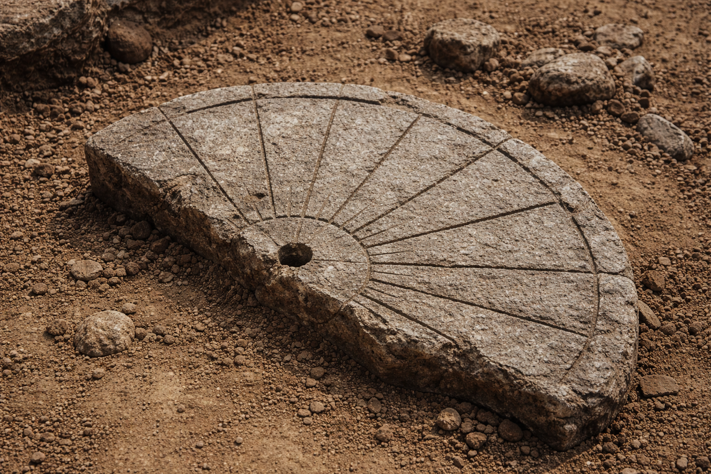
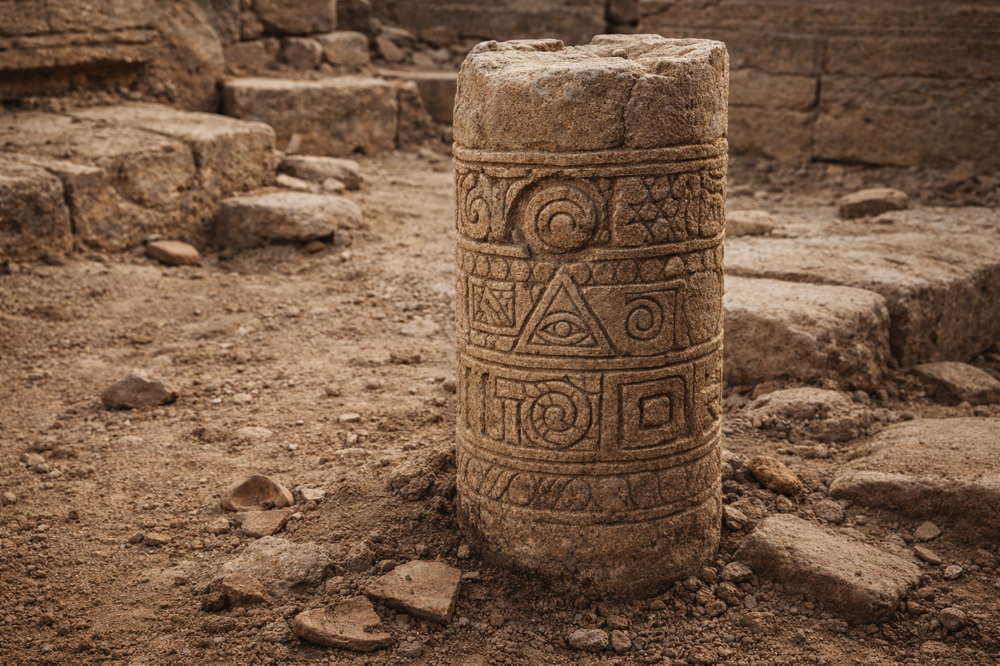
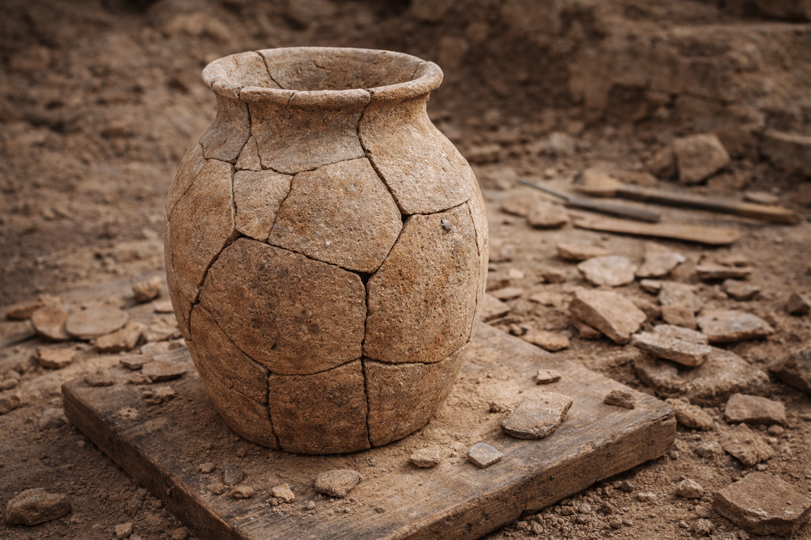

Archaeology
Basalt Sun Dial Fragment

Name: Basalt Sun Dial Fragment
Material: Volcanic basalt with visible mineral inclusions
Size/Weight/Shape: Estimated full diameter 1.2 m; surviving fragment 48 cm wide; irregular semicircular segment
Estimated Age: Approximately 9,500 years (based on associated sediment layer and charcoal fragments)
Preservation State: Upper fragment intact; surface erosion present; radial incisions partially preserved
Location Found: Excavation Site L-14, Nareth Basin Plateau (41.221°N, 12.881°E)
Likely Purpose: Time-marking device or seasonal solar alignment instrument
Evidence of Use: Shallow radial grooves with differential polish; central indentation suggesting pivot or gnomon placement
Manufacture Clues: Tool marks along outer rim; evenly spaced incisions forming angular divisions
Use and Function: Fixed horizontal stone installation aligned with solar trajectory
Found With: Burned bone fragments, compact ash layer, and smaller alignment stones
Burial or Habitat Context: Located within open-air settlement layer beneath wind-deposited sediment
Symbolism: Repeated circular motif carved along outer band
Comparison: Radial layout comparable to smaller stone markers found at Site R-3, though deeper incisions are present here
Carved Boundary Pillar Fragment

Name: Carved Boundary Pillar Fragment
Material: Fine-grained sandstone with iron-oxide staining
Size/Weight/Shape: 60 cm tall; ~28 cm diameter; cylindrical with flattened top break
Estimated Age: ~3,200 years (based on associated ceramics in the same layer)
Preservation State: Upper portion missing; carving bands mostly intact; surface pitting from exposure
Location Found: Terrace Trench T-6, Karan Ruins perimeter (39.084°N, 14.772°E)
Likely Purpose: Boundary marker, waypoint, or structural post base
Evidence of Use: Lower section shows abrasion and smoothing consistent with repeated contact or weathering in-place
Manufacture Clues: Chisel-cut geometric panels; repeated spacing between bands suggests measured layout
Use and Function: Fixed upright marker positioned along a path or enclosure edge
Found With: Pottery sherds, compacted gravel surface, and scattered limestone blocks
Burial or Habitat Context: Set into packed soil at the edge of a stone platform near collapsed wall segments
Symbolism: Alternating bands of triangles, spirals, and framed motifs; one panel features an eye-shaped carving
Comparison: Similar banded carving style to pillar fragments documented at Site H-2, though this piece has deeper relief
Reconstructed Ceramic Storage Vessel

Name: Reconstructed Ceramic Storage Vessel
Material: Fired clay with coarse mineral temper
Size/Weight/Shape: Approx. 42 cm tall; rounded body with narrow neck; estimated capacity 18–22 liters
Estimated Age: ~4,100 years (associated with stratified habitation layer)
Preservation State: Nearly complete reconstruction from 23 fragments; visible fracture lines remain
Location Found: Excavation Unit C-3, Lower Settlement Mound, Tel Arven (35.772°N, 13.118°E)
Likely Purpose: Storage container for dry goods or liquids
Evidence of Use: Interior surface shows residue staining and smoothing consistent with repeated filling and emptying
Manufacture Clues: Wheel-thrown body; hand-finished rim; horizontal striation marks visible along midsection
Use and Function: Stationary domestic storage vessel placed on compacted floor surface
Found With: Grinding stones, hearth ash, and smaller broken ceramic sherds
Burial or Habitat Context: Located within collapsed domestic structure beneath roof debris
Symbolism: Minimal surface decoration; faint band incisions near shoulder of vessel
Comparison: Comparable in form to storage jars documented in adjacent mound sectors, though this specimen shows thicker wall construction
Anthropology
(Add 3 Anthropology items here using the same layout.)
Histories
(Optional: Add short narrative entries, oral histories, or curated notes—cite sources if any.)